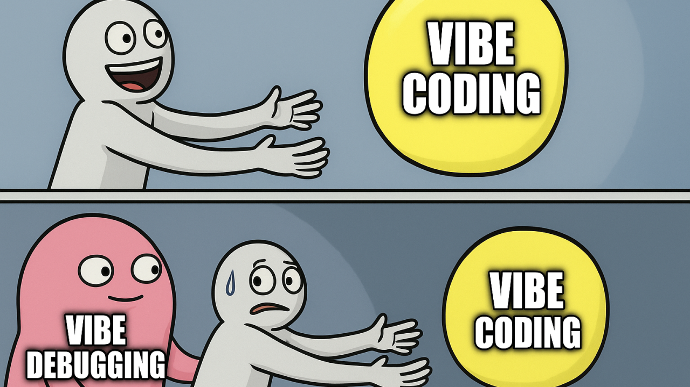

Learning How to Learn
A self-reflection amid frustration and self-doubt.
In today's world, we are constantly faced with the struggle of comparing ourselves to others. Whether it's social media, YouTube, or other forms of online interaction, we often end up feeling worthless or not smart enough. The issue, however, may not be a lack of intelligence, but rather that we are approaching learning the wrong way.
Realization: Stop Comparing Yourself to Others
The first and most important step is to stop comparing yourself to other people. Learning is a deeply personal journey, one that far exceeds anyone else's ideals, understandings, or approaches. It is unique to each individual, so the methods we use to learn will almost certainly differ.
If we focus on our own self-improvement, no matter how small, and reinforce it with positivity, we can far surpass our previous expectations. This naturally leads to an important question: what are our goals?
Set Healthy Goals
What exactly is a healthy goal? A healthy goal is small, achievable, and realistic. It's unfair to expect yourself to build a massive, full-stack application as your very first project. Instead, start with something manageable and give yourself a realistic timeline.
Learn intentionally. Take notes. Reflect on what worked and what didn't. And most importantly, relax. Programming is meant to be creative and enjoyable, not a source of constant stress or self-hatred.
Learn How to Break Things Down
Breaking problems into smaller pieces is a crucial skill. Write down what your program is supposed to do, identify where you feel stuck, and solve one small problem at a time.
# Example: Break a problem into small steps (Python)
# Goal: Track your study sessions and total focused time
sessions = [45, 45, 30] # minutes of focused work
total_minutes = sum(sessions)
session_count = len(sessions)
print("Sessions:", session_count)
print("Total focused minutes:", total_minutes)
print("Total focused hours:", round(total_minutes / 60, 2))
Time Chunking
Set intentional time intervals for studying and take advantage of your brain's natural efficiency. Deep learning happens best during focused flow states with minimal distractions. You can spend hours stuck on a single topic and still make very little progress.
Instead, try 45 minutes of focused, enjoyable study followed by a 30-minute break. Repeat this three times a day, and you'll likely learn far more than you ever would during an exhausting eight-hour cram session.
"Silence is essential. We need silence just as much as we need air, just as much as plants need light. If our minds are crowded with words and thoughts, there is no space for us." — Thich Nhat Hanh
Make Programming Fun
If programming is something you truly want to pursue, it has to be enjoyable. I struggled with this deeply. As someone with Obsessive Compulsive Disorder, I often associated programming with boring, mundane, and exhausting tasks. Over time, this mindset led me straight into burnout—largely due to school pressure, constant comparison, and unrealistic expectations.
That burnout forced me to reflect. If I wanted to pursue programming professionally, something had to change.
I started talking with my college peers, playing games on CodinGame, experimenting with game engines, and learning Python through libraries like Pygame. For the first time in a long while, programming felt fun again. I was working on things I genuinely cared about and seeing my ideas come to life.
Repetition Is Important
I would often, like I previously stated, do 8 hour crams for my Programming II assignments. I would ChatGPT my way through them and end up coming out with a decent program. Ultimately, I'd get an A, but I walked away knowing almost nothing.
It took me a while to realize it wasn't just self-critical thinking holding me back. It was my fear of doing the work myself. When I skipped the struggle and jumped straight to the answer, I also skipped the learning. I wasn't building the mental connections I needed to actually understand what was happening.
That's why repetition matters. The more you revisit a concept, especially across multiple days the more your brain reinforces it. Repetition isn't just "doing the same thing again" it's returning to an idea after time has passed, when your brain has started to forget it. That's where real learning happens.
Hermann Ebbinghaus one of the first scientists to study memory, demonstrated through his work on the forgetting curve that memory decays rapidly without repetition. Repeated exposure, however, dramatically slows this decay.
"With any considerable number of repetitions, a relatively small number of relearnings is sufficient to reproduce the entire series." — Hermann Ebbinghaus, Memory: A Contribution to Experimental Psychology (1885)
Embrace Your Weak Points
Focusing only on the areas where you already feel strong won't lead to much growth. It might feel productive, but it's often just comfortable. Real progress comes from identifying what you avoid, what you fear, or what makes you feel "not smart enough" and then working on it slowly, one step at a time.
By applying these strategies to your weakest areas, you'll experience growth not just in technical skill, but also in confidence and resilience.
Prevent Burnout
Above all else, protect your mental health and overall well-being. If programming becomes an exhausting, joyless obligation, burnout is almost inevitable and it will affect every part of your life.
Remember:
- Don't compare yourself to anyone but who you were yesterday
- Set healthy, realistic goals
- Break problems into manageable pieces
- Allocate your time intentionally
- Make learning fun
- Embrace repetition
- Target your weak points with patience